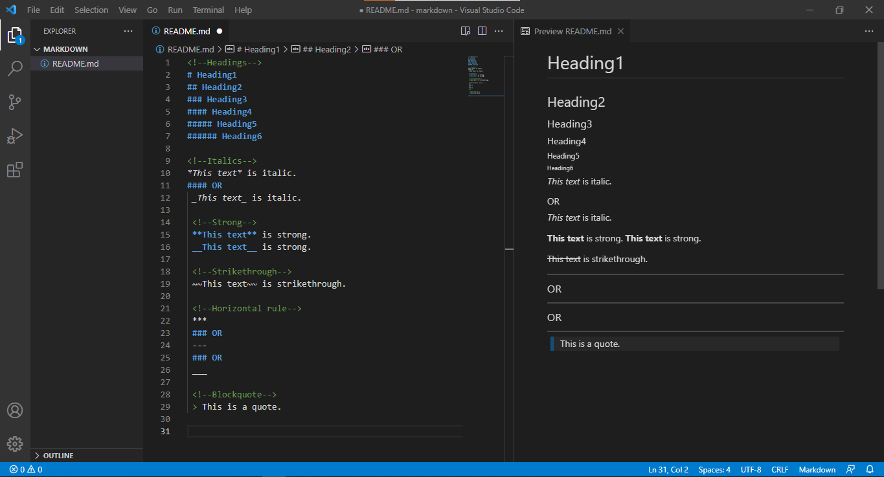
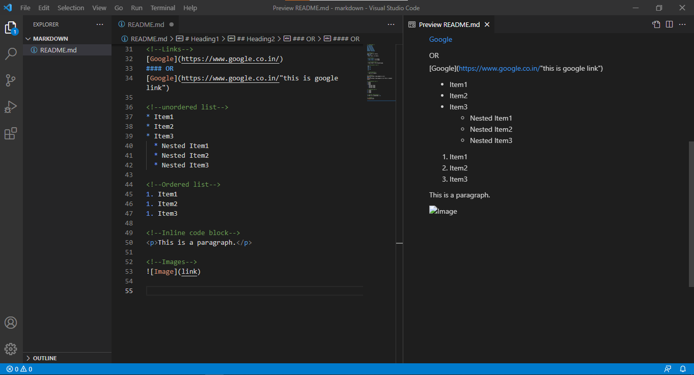
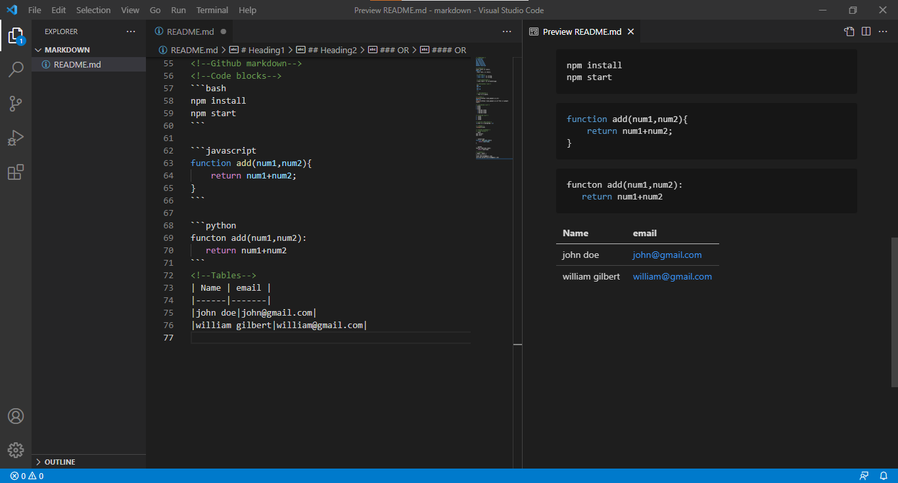

Blog || NamrataJain
10th July,2021
I wish i would have known about markdown much before!
So are you familiar with markdown?If not,then let's have a look at it together.
Here's all you need to about Markdown.
What's Markdown?
- It's a lightweight markup language with a plain text formatting syntax.
- It can be converted into HTML/XHTML and other formats.
- It's main purpose is readability and ease of use.
What is it used for?
- README files(Github,etc.) in documentation.
- Forum and blog posts.
- Used in many static site generators.
- Used to create websites, documents, notes, books, presentations, email messages, and technical documentation.
Markdown features:
- Portability:Markdown is portable i.e. you can import your markdown files from one markdown application to another.
- Platform-independent:Markdown is platform-independent i.e. you can create markdown-formatted text on any device running any operating system.
- Future-proof:Even if the application you are working on stops working at some time in future,you will still be sble to resd you markdown formatted text using a text editing application.
- Everywhere:Markdown is everywhere.Websites like Reddit and Github supports markdown, and lots of web-based and desktop applications supports it.
Somethings you can format using Markdown::
- Headings
- Lists
- Emphasis
- Links
- Block of code
- Images
- Block-quotes
- Horizontal rules, etc.
Markdown editors:
- Text-editor extensions.(VsCode, Atom ,etc.)
- MarkPad
- HarooPad
- MarkdownPad2
- Typora ,etc.
Markdown file extension:
Markdown files are generally saved with .md extension.Since it's a text file, you can edit it using Notepad or Notepad++, text edit or any other text editor.And this also justifies why it is future-proof.
You can save it with README.md or by any other file name with .md extension.
Markdown syntax:
Screenshots below show markdown file and some of it's common syntax displayed in VsCode:


